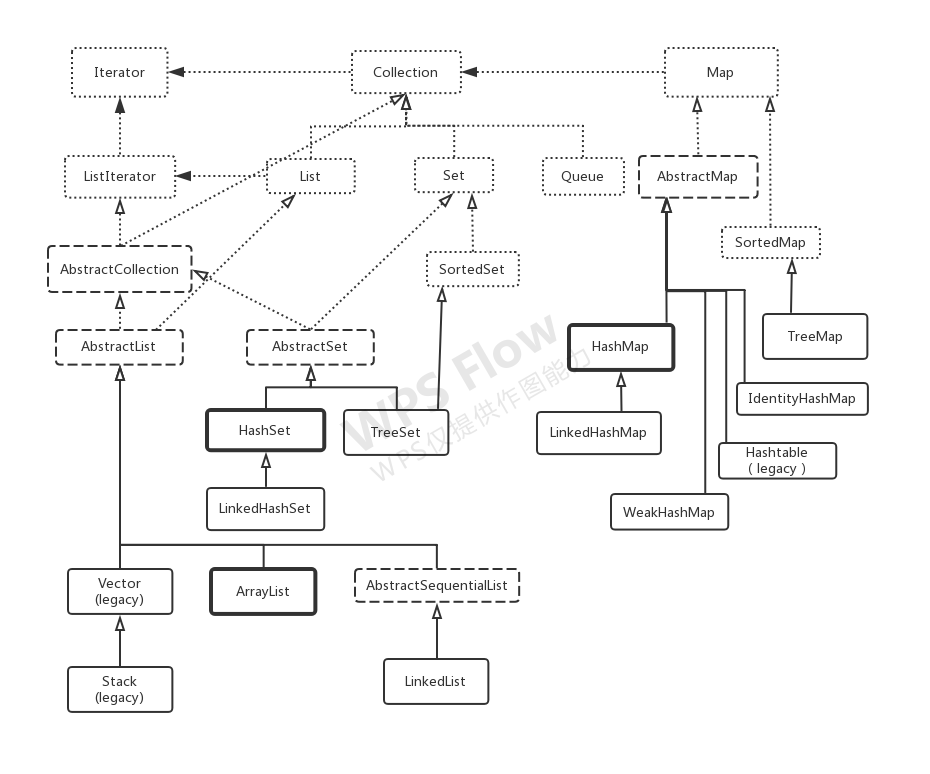

Java容器
留意
此文列出一些有可能常用的api，肯定没有文档列的全也没必要全面，还有旨在会用这些操作容器的方法即可，要了解更多回看《Thinking in Java》4th的持有对象和容器深入研究那两章。
首先展示集合类库较为完整图,实线代表具体的类，点线代表接口，短虚线代表抽象类。粗线框代表的类是最常用：

Interface Collection< E > api:
List、Set、Queue都支持以下操作
-
boolean add(E e) (可选) 添加一个元素
-
boolean addAll(Collection<? extends E> c) (可选) 添加另一个Collection所有元素
- void clear() (可选) 清除元素
-
boolean contains(Object o) 是否包含某个元素
-
boolean containsAll(Collection<?> c) 是否包含另一个Collection所有的元素
- boolean isEmpty() 检查是否为空
- Iterator< E > iterator() 返回迭代器
-
boolean remove(Object o) (可选) 移除一个元素
-
boolean removeAll(Collection<?> c) (可选) 移除另一个Collection包含的所有元素
- boolean retainAll(Collection<?> c) (可选) 保留另一个Collection包含的所有元素，其余移除
- int size() 返回尺寸
-
Object[] toArray() 返回Object数组，包含容器的所有元素
-
< T > T[] toArray(T[] a) 返回指定类型的数组，包含容器的所有元素
执行各种添加和移除都是可选操作，意味着实现类不需要为这些方法提供定义
List
在Collection基础上的 Interface List< E > api:
ArrayList、LinkedList支持以下操作
-
void add(int index,E element) 添加单个元素
-
boolean addAll(int index, Collection<? extends E> c) 可以添加多个元素
- E get(int index) 获取元素
- E remove(int index) 移除元素
-
int indexOf(Object o) 指出元素的索引，从头开始查找
-
int lastIndexOf(Object o) 指出元素的索引，从尾开始查找
-
ListIterator< E > listIterator() 返回一种支持双向操作的迭代器
-
ListIterator< E > listIterator(int index) 返回一种支持双向操作的迭代器，从index位置开始
- List< E > subList(int fromIndex,int toIndex) 取子列表
- E set(int index, E element) 选定某个元素进行替换或设置
Queue
Interface Queue< E > api:
-
boolean add(E e) 队尾插入元素,当空间限制插入元素抛出IllegalStateException
-
boolean offer(E e) 队尾插入元素
-
E element() 访问队头元素，队为空抛出NoSuchException
-
E peek() 访问队头元素,队为空返回null
-
E remove() 队头元素弹出，队为空抛出NoSuchException
-
E poll() 队头元素弹出，队为空返回null
在Queue< E >基础上的 Interface Deque< E > api:
LinkedList支持以下操作
-
void addFirst(E e) 当空间限制插入元素抛出IllegalStateException
-
void addLast(E e) 当空间限制插入元素抛出IllegalStateException
-
boolean offerFirst(E e) 空间受限返回false不抛出异常
-
boolean offerLast(E e) 空间受限返回false不抛出异常
-
E getFirst() 队为空抛出NoSuchException
-
E getLast() 队为空抛出NoSuchException
-
E peekFirst() 队为空返回null
-
E peekLast() 队为空返回null
-
E removeFirst() 队为空抛出NoSuchException
-
E removeLast()队为空抛出NoSuchException
-
E pollFirst() 队为空返回null
-
E pollLast() 队为空返回null
- void push(E e) 相当于addFirst(E)
- E pop() 相当于removeFirst()
Iterator
Interface Iterator< E > api:
-
boolean hasNext() 是否还有元素
-
E next() 返回后一个元素
-
default void remove() 删除新近返回的元素（可选操作）。每次调用next()只能调用一次此方法。如果在迭代进行过程中以其他方式（而不是通过调用此方法）修改了基础集合，则未指定迭代器的行为。
在Iterator的基础上，增加了向前移动，实现双向移动的功能 Interface ListIterator< E > api:
-
boolean hasPrevious() 反向遍历时，是否还有前一个元素
-
E previous() 返回前一个元素
-
void set(E e) 设置迭代器通过next()或previouse()访问最后一个元素的值，只有在对next()或previouse()的新近一次调用之后没有调用List的remove()和add(E)时，才能进行此调用。
-
int nextIndex() 返回当前位置后一个元素的索引
-
int previousIndex() 返回当前位置前一个元素的索引
-
void remove() 删除新近返回的元素
Set
Interface Set< E > api 与 Collection< E >一致
在Collection< E >基础上，SortedSet< E > api:
TreeSet支持以下操作
-
Comparator<? super E> comparator() 返回比较器，如果是自然排序则返回null
-
E first() 最前的元素
-
SortedSet< E > headSet(E toElement) toElement之前元素构成的SortedSet，不包括toElement
-
E last() 最后的元素
-
SortedSet< E > subSet(E fromElement,E toElement) fromElement到toElement构成的SortedSet
-
SortedSet< E > tailSet(E fromElement) fromElement之后元素构成的SortedSet
Map
Map< K, V > api:
HashMap、LinkedHashMap、IdentityHashMap、WeakHashMap支持以下操作
清空
- void clear()
检查是否为空
- boolean isEmpty()
查找键或值
-
boolean containsKey(Object key)
-
boolean containsValue(Object value)
产生条目集合或键集合
-
Set< Map.Entry< K,V > > entrySet()
-
Set< K > keySet()
添加条目
-
V put(K key,V value)
-
void putAll(Map<? extends K,? extends V> m)
获取键对应的值
- V get(Object key)
移除一个键值对
- V remove(Object key)
- default V replace(K key, V value
访问Map尺寸
- int size()
值构成的集合
- Collection< V > values()
Map.Entry< K, V > api:
-
K getKey()
-
V getValue()
在Map基础上，SortedMap< K, V > api:
TreeMap支持以下操作
-
Comparator<? super K> comparator()
-
K firstKey()
-
SortedMap< K,V > headMap(K toKey)
-
K lastKey()
-
SortedMap< K,V > subMap(K fromKey, K toKey)
-
SortedMap< K,V > tailMap(K fromKey)
hashCode()和equals()
如果使用自己定义的类作为HashMap的键，要覆写hashCode()的同时一定要覆写equals()，正确的equals()满足5个条件:
-
自反性。 对任意x，x.equals(x)一定返回true
-
对称性。对任意x和y，如果y.equals(x)返回true，则x.equals(y)也返回true
-
传递性。对任意下x、y、z，如果有x.equals(y)和y.equals(z)返回true，那么x.equals(z)也返回true
-
一致性。对任意x和y，如果对象中用于等价比较信息没有改变，无论调用几次x.equals(y)保持一致的true
-
非空性。x.equals(null)一定返回false。
覆写hashCode()的基本指导:
-
首先给出int变量result赋予某个非零值，如17
-
为对象内的每个有意义的域计算int散列吗c:
| 域类型 | 计算 |
|---|---|
| boolean | c = (f ? 0 : 1) |
| byte、char、short或int | c = (int)f |
| long | c = (int)(f ^ f >>> 32) |
| float | c = Float.floatToIntBits(f); |
| double | long l = Double.doubleToLongBits(f);c = (int)(l ^ l >>> 32) |
| Object、其equals调用这个域的equals() | c = f.hashCode() |
| 数组 | 每个元素应用上述规则 |
-
合并运算得到散列码：
result = 37 * result + c -
返回result。
-
检查hashCode()最后生成结果，确保相同对象有相同的散列。
实用工具类Collections
Class Collections api:
往集合添加元素
- public static < T > boolean addAll(Collection<? super T> c, T… elements)
列表的二分查找
-
public static < T > int binarySearch(List<? extends Comparable<? super T» list,T key)
-
public static < T > int binarySearch(List<? extends T> list, T key,Comparator<? super T> c)
产生动态类型检查的集合，防止加入不正确的类型，在编译期就能发现错误
-
public static < E > Collection< E > checkedCollection(Collection< E > c,Class< E > type)
-
public static < E > List< E > checkedList(List< E > list,Class< E > type)
-
public static < K,V > Map< K,V > checkedMap(Map< K,V > m,Class< K > keyType,Class< V > valueType)
-
public static < E > Set< E > checkedSet(Set< E > s,Class< E > type)
-
public static < K,V > SortedMap< K,V > checkedSortedMap(SortedMap< K,V > m,Class< K > keyType,Class< V > valueType)
-
public static < E > SortedSet< E > checkedSortedSet(SortedSet< E > s,Class< E > type)
最大值、最小值
-
public static < T extends Object & Comparable<? super T> > T max(Collection<? extends T> coll)
-
public static < T extends Object & Comparable<? super T> > T min(Collection<? extends T> coll)
最大值、最小值
-
public static < T > T max(Collection<? extends T> coll,Comparator<? super T> comp)
-
public static < T > T min(Collection<? extends T> coll,Comparator<? super T> comp)
子列表在源列表的位置
-
public static int indexOfSubList(List target)
-
public static int lastIndexOfSubList(List target)
所有旧值更换为新值
- public static < T > boolean replaceAll(List< T > list,T oldVal,T newVal)
列表反向排序
- public static void reverse(List<?> list)
列表反向排序的元素比较器
-
public static < T > Comparator< T > reverseOrder()
-
public static < T > Comparator< T > reverseOrder(Comparator< T > cmp)
元素位置平动
- public static void rotate(List<?> list,int distance)
随机排序
-
public static void shuffle(List<?> list)
-
public static void shuffle(List<?> list,Random rnd)
排序
-
public static < T extends Comparable<? super T> > void sort(List< T > list)
-
public static < T > void sort(List< T > list, Comparator<? super T> c)
拷贝
- public static < T > void copy(List<? super T> dest, List<? extends T> src)
元素交换位置
- public static void swap(List<?> list,int i,int j)
填充
- public static < T > void fill(List<? super T> list,T obj)
拷贝n次对象o生成大小为n的List
- public static < T > List< T > nCopies(int n,T o)
检查集合之间是否有共同的元素，有返回false，无返回true
- public static boolean disjoint(Collection c2)
查看相同元素的个数
- public static int frequency(Collection<?> c,Object o)
空集合
-
public static final < T > List< T > emptyList()
-
public static final < K,V > Map< K,V > emptyMap()
-
public static final < T > Set< T > emptySet()
单项集合
-
public static < T > Set< T > singleton(T o)
-
public static < T > List< T > singletonList(T o)
-
public static < K,V > Map< K,V > singletonMap(K key,V value)
线程安全的集合
-
public static < T > Collection< T > synchronizedCollection(Collection< T > c)
-
public static < K,V > Map< K,V > synchronizedMap(Map< K,V > m)
不可修改的集合
-
public static < T > Collection< T > unmodifiableCollection(Collection<? extends T> c)
-
public static < K,V > Map< K,V > unmodifiableMap(Map<? extends K,? extends V> m)
- public static < T > ArrayList< T > list(Enumeration< T > e)
- public static < T > Enumeration< T > enumeration(Collection< T > c)
旧式不建议使用的容器
Hashtable< K, V >用法与HashMap< K, V>相似
Vector和Enumeration
Class Vector< E > api:
构造器
-
Vector(int initialCapacity)
-
Vector(int initialCapacity, int capacityIncrement)
-
void addElement(E obj) 添加元素
-
int capacity() 查看容量
-
void copyInto(Object[] anArray) 拷贝所有元素到数组
-
E elementAt(int index) 索引位置index的值
-
Enumeration< E > elements() 返回Enumeration对象
Class Enumeration< E > api:
-
boolean hasMoreElements() 查看是否还有元素可遍历
-
E nextElement() 返回下个元素
Stack
Class Stack< E > api:
-
public Stack()
-
public E push(E item) 压栈
-
public E pop() 退栈
-
public E peek() 查看栈头
-
public boolean empty() 是否为空
-
public int search(Object o)
BitSet
记录大量的“开/关”信息的良好选择是BitSet，不过EnumSet在能拥有可命名的固定的标志集合比BitSet更有优势。BitSet是64位的。
-
BitSet()
-
BitSet(int nbits)
-
boolean get(int bitIndex) 查看某个位置的开关信息
-
void clear(int bitIndex) 某个位置清空标志
-
void set(int bitIndex) 某个位置设置标志